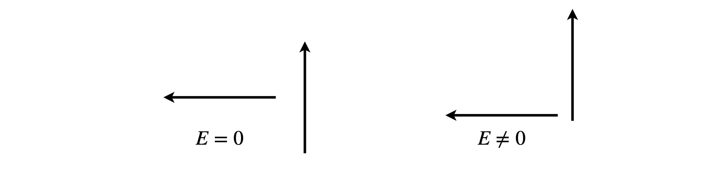
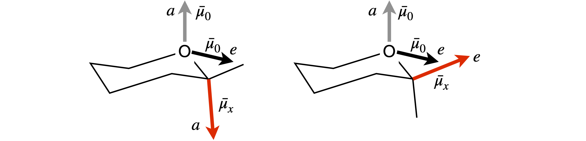

Solutions Q39 - 46¶
# import all python add-ons etc that will be needed later on
%matplotlib inline
import numpy as np
import matplotlib.pyplot as plt
from sympy import *
init_printing() # allows printing of SymPy results in typeset maths format
plt.rcParams.update({'font.size': 16}) # set font size for plots
Q39 answer¶
(a) Taking the dot product
If we now use the orthonormality of the base vectors \(\vec\varphi_1, \vec\varphi_2\) , then basis set vector components with dissimilar indices are zero, and those with the same index unity, leaving \(\vec\psi_1\cdot\vec \psi_2 = a_1b_1 - a_2b_2\). This is the same result as obtained using equation 36. Equivalent results are found using the summation formula:
and in matrix form \(\displaystyle \begin{bmatrix}a_1&a_2\end{bmatrix}\begin{bmatrix}b_1\\-b_2\end{bmatrix}=a_1b_1-a_2b_2\)
(b) A vector \(\vec v\) is normalized when it becomes \(\displaystyle \vec v \to \frac{\vec v}{\sqrt{\vec v\cdot\vec v}}\). Normalisation produces
Q40 answer¶
The wavefunctions are \(\vec \psi_1 = 2\vec\varphi_1 + 2\vec\varphi_2\), and \(\vec\psi_2 = 4\vec\varphi_1 - 4\vec\varphi_2\)
and when normalized are \(\vec\psi \to \vec\psi/\sqrt{\vec\psi\cdot\vec\psi}\).
The dot product is \(\displaystyle \vec\psi_1\cdot\vec\psi_1= 4(\vec\varphi_1 + \vec\varphi_2)\cdot(\vec\varphi_1 + \vec\varphi_2) =8\)
and the then \(\displaystyle \vec\psi_1= \frac{2}{\sqrt{8}}(\vec\varphi_1 + \vec\varphi_2)\) and similarly \(\displaystyle \vec\psi_2= \frac{2}{\sqrt{8}}(\vec\varphi_1 - \vec\varphi_2)\). The dot product \(\vec\psi_1\cdot\vec\psi_2=0\) because \(\vec\varphi_1\cdot\vec\varphi_2=0\). We conclude that the wavefunctions are orthogonal and could therefore describe two eigenstates of the same quantum system. The wavefunctions could be describing H\(^+_2\) and if so have the form of bonding and anti-bonding orbitals.
Q41 answer¶
Yes, because the dot product is zero; \((1 + 1 - 1 - 1)/4 = 0\).
Q42 answer¶
(a) The dot product is zero if the two orbitals are orthogonal. Choosing \(\vec v_1\) and \(\vec v_2\), their dot product is \((-1 + 1 + 0 -1 + 1 + 0)=0\), and with \(\vec v_3\) and \(\vec v_6\) produce \((-1+0-+1+0+1)=0\) and so on, except for \(\vec v_3\) and \(\vec v_2\). Their dot product is \(\vec v_2\cdot\vec v_3 = (+1 +0 +0 +1 +0 +0) = 2\) so these vectors are not orthogonal to one another. Orbitals 5 and 6 are orthogonal with orbitals 1 to 4, but not with one another because their dot product produces \(-2\) and not zero.
(b) One linear combination is \(\vec v_2+\vec v_3=\begin{bmatrix}-2&1&1&-2&1&1\end{bmatrix}\),
the other \(\vec v_2-\vec v_3=\begin{bmatrix}0&1&-1&0&1&-1\end{bmatrix}\)
and the dot product with \(\vec v_1\) is
and with the other linear combination is also zero,
therefore these new orbitals are orthogonal with one another and with the other orbitals.
Normalizing a vector v can be achieved with \(\vec v/\sqrt{\vec v\cdot\vec v}\). This produces the following results \((\vec v_2+\vec v_3)\cdot(\vec v_2+\vec v_3)=12\) hence the normalisation constant is \(1/\sqrt{12}\) and \((\vec v_2-\vec v_3)\cdot(\vec v_2-\vec v_3)=4\) with normalisation constant \(1/2\).
The similar calculation on orbitals 5 and 6 produces the normalized vectors
(c) The orbitals are shown in Figures 89 and 90 in chapter 7, Matrices. Their shapes can also be obtained from a consideration of molecular group theory.
Q43 answer¶
(a) The angles are \(\alpha = 0,\; \beta= 0\); in calculating \(\vec R\cdot\vec \mu_2\) use the angle \(\beta\) to the right of dipole. The angle \(\gamma\) between the dipoles is \(180^\text{o}\) as they are parallel and in line, then
With \(R\cdot\mu_1=R|\mu_1|\cos(0)= R|\vec \mu_1|\), and \(R\cdot\mu_2= R|\vec \mu_2|\)
the energy is
and because it is negative, this means that the interaction is attractive. In terms of the charge \(\delta\) on each molecule,\(\displaystyle E=\frac{4\delta^2a^2}{\pi\epsilon_0R^3}\) which shows that that the bigger the dipole is, the larger the interaction is as intuition would dictate.
The maximum repulsion occurs in the opposite situation, when \(\alpha = 0,\; \beta = 180^\text{o}\), now \(\vec R\cdot\mu_2=R|\mu_2|\cos(\pi)= -R|\vec \mu_2|\) and the angle between the dipoles is zero, \(\vec\mu_1\cdot\vec\mu_2=|\vec\mu_1||\vec\mu_2|\). The energy is
which is not unsurprisingly the same magnitude but of opposite energy to the attraction.
(b) The minimum interaction occurs when the two terms n the equation are of equal and opposite sign, or both are zero. Intuitively, the latter occurs when the two dipoles are at \(90^\text{o}\) to one another as shown below, figure 71, and therefore, the positive and negative interactions cancel. However, the interaction is only zero if the one dipole points towards the centre of the other as in the left-hand diagram.

Figure 71. Dipole orientations.
When the angle between the dipoles is \(90^\text{o}\), then \(\vec\mu_1\cdot\vec\mu_2 = 0\). However, \(\vec R\cdot\mu_2 = 0\) only when the left-hand dipole is in line with the centre of the other and then the total interaction energy is zero. There is zero interaction if either \(\alpha = 0°,\; \beta = 90^\text{o}\) or \(\alpha = 90^\text{o},\; \beta = 0\).
Additionally, zero interaction can occur when the two terms in the equation cancel. If we assume that the dipoles are in the plane of the page, then by making a triangle of the two vectors, as shown in figure 26, the angle between the dipoles is \(\gamma = 180 - \alpha - (180 - \beta)\). The condition for zero interaction is
and by dividing both sides by common terms and expanding the cosine as
Figure 72 shows the solution by plotting \(\tan(\alpha)\) and \(2/\tan(\beta)\) vs the angle which produces \(\alpha=\beta= \pm 54.73^\text{o}\), therefore both dipoles are parallel and at the same angle to the vector separating them, as shown below.
Figure 72. Dipole angles.
(c) In figure 27 the vectors are parallel and the angle between them is zero, so that
The other dot products are
and from this, the answer follows after some simplification. Additionally, when \(\cos(\theta) = \sqrt{1/3}\), then the expression is zero and \(\theta = 54.7^\text{o}\), as in the previous question.
(d) In figure 28 (i) the angle \(\displaystyle \gamma =180-30-100\) hence
therefore \(E = 0.045\;\mathrm{ D^2 nm^{-3}} \equiv 0.045 \cdot 10^{-23}\) J (notice that \(\mathrm{D^2}\cdot10^{-27}/4\pi\epsilon_0 = 10^{-22}\)). Thermal energy at 300 K is \(4.142 \cdot 10^{-21} \equiv 414.2 \cdot 10^{-23}\) J, which is larger by \(\approx 10^4\) times than the dipole - dipole interaction. Therefore, at this temperature the dipolar molecules cannot take up any preferred orientations with respect to one another because solvent molecules continuously jostle them and this has the effect of randomising their orientations.
Q44 answer¶
Let \(\vec R\) be a vector along the line between the centres of the two dipoles. The dot products with \(\vec R\) are
where \(\mu_1,\; \mu_2\) are the lengths of the dipoles and \(R\) the length of \(\vec R\). The redrawn diagram is shown in figure 73.

Figure 73. Two dipoles in polar coordinates.
The distance from the origin to \(B\), is the projection of \(\vec\mu_2\) onto the \(x-y\) plane which is \(\vec\mu_1\cos(90 - \theta_1)\) or \(x = \mu_1\sin(\theta_1)\), and the projection onto the \(x\)-axis (length A) is \(\mu_1\sin(\theta_1)\cos(\phi_1)\). The projection onto the \(y\)-axis (length \(B\)) is \(y = \mu_1\sin(\theta_1)\sin(\phi_1)\) and onto the \(z\)-axis is \(z = \mu_1\cos(\theta_1)\). Thus, a vector can now be written in \(x, y, z\) coordinates. The same arguments apply to the other vector. All that now remains to write and simplify the dot product in a suitable basis. The \(i, j, k\) basis can be used but a matrix vector basis is clearer;
this expands to
The terms can be combines using the identity \(\cos(a-b)=\cos(a)\cos(b)+\sin(a)\sin(b)\) to give
Combining with the other terms gives
which, when simplified, produces the equation in the question.
Q45 answer¶
(a) The interaction between the dipoles is estimated by considering the distance between their positive and negative partial charges. The separation between the C and O atoms is constant, therefore so is their interaction, each atom’s dipole here being slightly \(\delta+\). The determining attraction is therefore between the negative ends of each dipole with the positive and negative parts of the other dipole.
In the molecule shown on the left of figure 74, the negative charges of the two dipoles are far apart between the two axial positions, so interact only slightly. The interaction between the axial \(\vec\mu_x\) and equatorial \(\vec\mu_O\) is larger, as the ends of the dipole are closer, and is more repulsive than the \(a-a\) interaction.
The molecule on the right with the \(e\) substituent, has a strong repulsive interaction between the \(e-e\) direction dipoles and the same repulsion for the \(e-a\) interaction as in the other molecule, therefore, the \(e\) substituent molecule is less stable. In a solvent all the interactions are reduced by \(1/\epsilon\) which is largest in a polar solvent. If the dipole interaction is already small, making it smaller has little effect. Therefore, the solvent effect is most important in reducing the \(e\) substituent’s dipole repulsion, making it more likely that equal amounts of the axial and equatorial substituents are produced in polar solvents, as shown by experiment.
(b) Determining the geometry of the molecule is the most difficult part, whereas calculating the dot products is relatively easy so the calculation is far easier using vectors. Using the idealized symmetry of the structure considerably simplifies the calculation; bonds \(A\) and \(A'\) are parallel to one another, and so are the \(B\) and \(B'\), and \(C\) and \(C'\) bonds; the projection of bond \(B\) bisects the \(C'-A'\) bonds.
Recall, that a tetrahedral atom can be placed at the centre of a cube the surrounding atoms reaching opposite corners, see question 14. This enables us to determine the molecule’s coordinates as shown in the diagram, and from these, bond vectors can be made with which to calculate the dipole energy.

Figure 74. Geometries for the anomeric effect calculation.
Considering the axial substituent, bond \(C\) first, its dipole is \(\vec\mu_x = \beta\vec\mu_{nx}\) where \(\vec\mu_{nx}\) is a unit vector in the direction of the dipole, in our coordinates this is also the direction of bond \(C\). The dipole vector is \(\vec \mu_x = \beta\begin{bmatrix}-1&1 &-1\end{bmatrix}/\sqrt{3}\), where \(1/\sqrt{3}\) is the normalization. The axial vector of the oxygen lone pairs is along direction \(C'\), and is the vector \(\vec\mu_O = \alpha\begin{bmatrix}1 &-1 & 1\end{bmatrix}/\sqrt{3}\) which obtained from the coordinates of \((\vec v_3 - \vec v_4) - v_3\) or \(-\vec v_4\). The vector between the dipoles is taken to be along the bond \(d\), and is therefore \(\vec R = d\begin{bmatrix}1 &-1 &-1\end{bmatrix}/\sqrt{3}\).
The dot products are
The dipolar energy is therefore
Python/Sympy can now be used to complete the calculation. The vectors are defined first, then the energies calculated but for clarity without the constants, which can be added later. The vectors are worked out using the figure.
Figure 75. Notation used in the calculation; bond labels and the coordinates of the atoms.
alpha,beta,R,d=symbols('alpha,beta,R,d')
muXa = beta*Matrix( [-1, 1, -1] )/sqrt(3) # x dipole axial
muXe = beta*Matrix( [-1,-1, 1] )/sqrt(3) # x dipole equatorial
muOa = alpha*Matrix([1, -1, 1] )/sqrt(3) # O dipole axial
muOe = alpha*Matrix([-1,-1, -1] )/sqrt(3) # O dipole equatorial
R = d*Matrix([1,-1,-1])/sqrt(3) # vector between dipoles
energy_axial_axial= (muOa.T * muXa)/d**3 - 3*(muOa.T *R)*(muXa.T*R)/d**5
energy_axial_axial
energy_axial_equat = (muOe.T * muXa)/d**3 - 3*(muOe.T *R)*(muXa.T*R)/d**5
energy_axial_equat
energy_equat_equat = (muOe.T * muXe)/d**3 - 3*(muOe.T *R)*(muXe.T*R)/d**5
energy_equat_equat
energy_equat_axial = (muOe.T * muXa)/d**3 - 3*(muOe.T *R)*(muXa.T*R)/d**5
energy_equat_axial
The sum of the axial substituent’s dipole -dipole energy is zero, that of the equatorial substituent is
which is a considerable repulsive energy. As \(\epsilon\), the dielectric constant changes from \(\approx 2\) in a non-polar solvent to \(\approx 80\) in water, this energy decreases significantly in water and similar polar solvents, and hence almost equal axial and equatorial substituents are expected and observed.
As a check, suppose as a ball-park figure, that the dipoles are \(1\) D each (\(1\;\mathrm{D} = 3.33\cdot10^{-30}\) C m) and the bond length \(d = 0.15\) nm. This makes the dipole - dipole energy approximately \(4\cdot 10^{-20}/\epsilon\) J which, in a non-polar solvent when \(\epsilon \approx 2\) , is about five times larger than thermal energy at room temperature, \(0.41\cdot 10^{-20}\) J, but is much smaller than thermal energy when \(\epsilon \approx 80\).
Exercise: Repeat the calculation, but correctly define \(R\) as the vector between the centres of each pair of dipoles. \(R\) will no longer have length \(d\) and this will have to be calculated in each case.
Q46 answer¶
(a) The Mg-Mg distance is calculated using positional vectors,say \(p\) and \(q\), from the origin, \(\vec OO=\begin{bmatrix} 0& 0& 0\end{bmatrix}\) to each of the Mg atoms. The distance is then \(|\vec p -\vec q|\).
Taking values from the data
then the distance\(|\vec p -\vec q|= \Delta^2_x +\Delta^2_y +\Delta^2_z\) where \(\Delta\) is the difference in \(x-, y-\), or \(z\)-coordinate and we find that \(d_{Mg-Mg} = 12.02\) angstrom or \(1.202\) nm. When normalised this Mg-Mg vector is \(\begin{bmatrix}0.677 &-0.608 &-0.415\end{bmatrix}\).
(b) To calculate a unit dipole vector along the Mg-NA bond, we first have to calculate the vector and normalize it, which means dividing by its length, in this case the bond length.
The dipole vector \(\vec\mu_1\) for the donor (atoms 498 and 518) is
and as the length, Mg-NA is \(2.14\) angstrom the normalized vector is
With vector \(\vec\mu_2\) a similar calculation also produces a length of \(2.14\) angstrom. The normalized vector is
and as a check, the sum of the squares of the vector components should add to one when normalized; i.e. its dot product is one.
The dot product
and calculating the other dot products in a similar way produces;
and therefore \(\chi^2 = 0.476\). The calculation in Python can be done as follows:
#Algorithm. Calculate orientation between dipoles in Chlorphyll molecules.
# dipole (N518-Mg498) and dipole (N543-Mg525)
p = np.array([ 114.289,22.722, 26.723 ]) # Mg 498
q = np.array([ 106.145,30.029, 31.708 ]) # Mg 525
ND518 = np.array( [115.789,24.007, 27.556] ) # N atom 518
ND543 = np.array( [104.38 ,29.292, 32.675] ) # N atom 543
R = p - q # R is now a vector of length 3
mu1 = p - ND518
mu2 = q - ND543
d_N_Mg1 = np.sqrt(np.dot(mu1,mu1)) # distances
d_N_Mg2 = np.sqrt(np.dot(mu2,mu2))
d_Mg_Mg = np.sqrt(np.dot(R,R) )
nmu1 = mu1/d_N_Mg1 # normalise vectors
nmu2 = mu2/d_N_Mg2
nR = R/d_Mg_Mg
mu1_mu2 = np.dot(nmu1,nmu2)
mu1_R = np.dot(nmu1,nR)
mu2_R = np.dot(nmu2,nR)
chi = mu1_mu2 - 3*mu1_R*mu2_R
print('{:s}{:6.3f}'.format('chi squared = ', chi**2) )
chi squared = 0.476